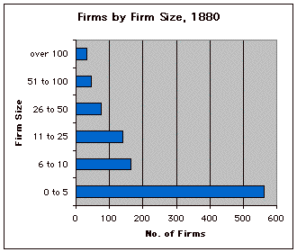
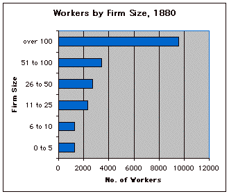

Historians
working with evidence that can be counted almost always confront the
difficult problem of how to organize the data into categories. But it
is only by putting things into categories that we can answer some of
the most important and most interesting questions. For example, to say
whether "big business" dominated the economy in the nineteenth
century, we need to decide, what qualifies as "big." Or to
argue that "poverty" decreased in the 1960s, we have to define
what incomes qualify as "poor." Or to determine whether Americans
in the nineteenth century experienced "upward social mobility,"
we need to decide what qualifies as "social mobility." Is
it more property? How much? Is it a different job? What makes one job
"better" than another? Can we put jobs into categories like
"blue collar" and "white collar?"
One topic that involves categorizing data is characterizing the experience
of American industrialization in the late nineteenth century, especially
since historians disagree among themselves about how to characterize
this experience. In the following exercise, we will address one aspect
of this general issue by examining the profile of manufacturing enterprises
in Cleveland, Ohio, in 1880. Fortunately for us, Federal census takers
in 1880 collected information on the number of workers employed by each
manufacturing firm in Cleveland, then one of the fastest growing cities
in the nation. The resulting data set includes information for 1,018
firms. The range of employees per firm is 0 to 1,935. We begin with
two distinct but related questions:
How big were most manufacturing firms? Did most industrial workers work
for big or little firms?
The mean number of employees per firm is 20.0; the median is 4.0; and
the mode is 2.0, while the standard deviation is 86.0. From the median
alone, we can arrive at a useful response to the first question posed
above: half of the firms employed four or fewer employees. But we can
also tell from the difference between the median and the mean and from
the magnitude of the standard deviation compared to the mean that there
was a wide dispersion of firm sizes. Moreover, we still cannot answer
the second question we raised above because we do not yet have a full
picture of the distribution of employees across different sizes of firms.
To generate this picture, we need first to turn the qualitative terms
"big" and "little" into numeric categories and then
to graph our data so we can read it properly.
How should we categorize (or classify) firms? There are no universally
agreed upon definitions of "big" or "little" firms,
and to some extent any classification scheme we adopt will be arbitrary.
We could just divide our range of firms into two groups, using—for
example—either the mean, median, or mode as our "break point"
between large and small. But given the difference between these measures
of central tendency and given the data set’s high standard deviation,
we would be better off using a more elaborate classification scheme,
one with several categories so as to better represent the distribution
of the data: 0 to 5 employees, 6 to 10 employees, 11 to 25 employees,
26 to 50 employees, 51 to 100 employees, and more than 100 employees.
Note that in choosing this scheme we haven’t really resolved the
issue of what constitutes a "big" or "little" firm.
Instead we have kept open the option of using different "break
points" when we read the organized data.
Now we
are ready to arrange our data and to look for patterns. Examine the
two graphs below. Both are based on the data set of manufacturing firms
in Cleveland, Ohio, in 1880. Graph 4 displays the distribution of firms
by the category of firm size (e.g., number of workers employed). Graph
5 displays the distribution of workers by the category of firm
size.
Graph 4: Number of Manufacturing Firms by Firm Size, Cleveland, Ohio,
1880

Graph 5: Number of Manufacturing Workers by Firm Size, Cleveland,
Ohio, 1880

With the help of these graphs, you should be able to answer the questions
we raised at the beginning of this exercise: